{kind=link}
{kind=link}
{kind=link}
{kind=link}
{kind=link}
{kind=link}
{kind=link}
{kind=link}
{kind=link}
{kind=link}
{kind=link}


21st Century Toys Macchi C.202 Folgore �Lightning�
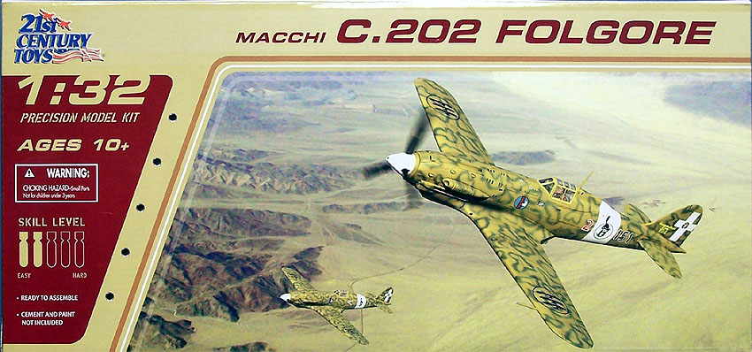
Kit #22102
MSRP about $10.00
Images and text Copyright � 2007 by Matt Swan
Developmental Background
In 1939 Alpha Romeo was licensed by Daimler-Benz to build the DB-601A inverted V-12 engine in Italy. While waiting for production capabilities to be achieved locally Alfa imported some DB-601 engines immediately and began working with engineers at Macchi to mate this power-plant to the Macchi C-200 airframe. By August of 1940 the first prototype of the new hybrid designated C.202 had taken flight. During the summer of 1941 the first production aircraft were being delivered to operational units and the type was first seen in action over Libya in November of 1941.
The C.202 was a rugged and durable aircraft that could hold its own against the Allied P-38 Lightning and Super Marine Spitfire at low altitudes however its weak armament did hamper its effectiveness. The type was the most prolific fighter aircraft within the Regia Aeronautica and saw service not only in Libya but in North Africa and along the Eastern Front. After the armistice with Italy the type was used as a trainer aircraft. After the war 41 aircraft were fitted with the improved DB-605 engine and exported to Egypt as C.205s. Overall about 1200 C.202s were manufactured between 1941 and 1943.
The Kit
21st Century Toys, and I place emphasis on the word �Toys�, has released a very interesting series of plastic model aircraft. At first these were all offered as pre-built, pre-painted model aircraft but just recently they have begun to release them in the un-built, un-painted mode. These �models� straddle the line between toys and true models like we as modelers think of the subject. They feature folding landing gear and opening canopies, they have a limited number of parts and have large screw holes in the fuselage and wings for basic assembly with large black poly caps to fill the holes afterwards. As a modeler you may wonder just why the heck we would be interested in a subject like this but here is the catch, they do have fairly accurate profiles, easily as accurate as we would fine in a main line model distributor. They include very nice decals and the screw holes can be filled, sanded off and the model painted to be very presentable.
Very little with these kits follows with conventional modeling thought. Only a few detail pieces are attached to a sprue, all the primary parts are already removed from the injection sprues, clean up and trimmed. Each large piece is sealed in its own little poly bag. Early release kits included a pre-painted pilot but I suspect this was just an inventory clean-out from the pre-painted, pre-assembled kits. Later releases in the series included unpainted pilot figures. The plastic is not the soft medium gray stuff we are most familiar with but rather a semi-translucent ABS-type plastic that looks like it should glow in the dark. I checked � it does not. Fortunately this plastic does respond well to the glues we are most familiar with and this helps move the kit into the realm of the modeler.
Surface detail includes basic access panels with engraved panel lines and rivet detail. There are no visible sink holes, minimal injector pin markings and no flash. Steel pins are provided for the main gear axels and propeller shaft. The secondary gear doors are attached with a long metal shaft allowing them to open and close. There are some accuracy issues with the gear doors and gear struts but that is mostly from compromises made to make them postionable. It would not take much for a serious modeler to correct these few items. The canopy is nicely clear with well defined raised frame lines however some accuracy was sacrificed to add sturdy plastic hinge tabs to the main piece. Interior cockpit detail is relatively good but the rudder pedals are huge chunky things that the modeler may want to replace, especially if the pilot figure is not going to be placed in the model. Interior landing gear bay detail is good and radiator detail is good. Overall the kit includes fifty one semi-translucent plastic pieces, thirteen metal pins and screws, nine poly caps and two clear pieces for a total of seventy five pieces in the box.
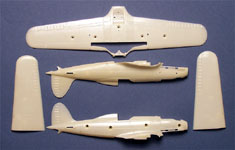
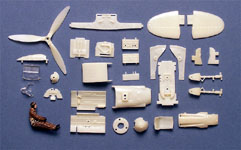
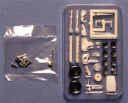
You may click on the small images above to view larger pictures
Decals and Instructions
Kit instructions are an eight panel A-4 sized fold-out with seven panels actually being used. They open with a good historical background of the aircraft type. Assembly instructions consist of eleven exploded view steps with some limit color call-outs by color name only. One panel is devoted to exterior painting and decal placement. It shows one dark green aircraft, one with smoke rings and one with green splotches over sand � this scheme is incorrect as this one should be brown and tans over medium green.
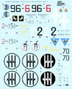
The kit decals are one of the high points of the kit, they are very nice with brilliant colors. The sheet gives the modeler markings for three different aircraft and includes all the basic national markings along with a few service stencils. The markings show excellent print registry and good color density. I have not yet had a chance to put and of these decals down yet but reports from other modelers indicate they behave nicely and are probably worth the price of the kit by themselves.
Conclusions
I don�t think there is a single modeler amongst us who does not have at least one story of an early Revell-Monogram kit that was instrumental in starting them down the polystyrene path. 21st Century Toys has taken that place with the next generation of modelers. They are putting out a series of fun plastic airplanes that will catch the interests of young children, a good portion of which will eventually grow into our next generation of serious modelers. Twenty years from now the stories modelers tell of their beginnings will most likely feature tales of 21st Century Toys kits as the spark that started the fire. I think that is just great plus these kits are fun for us old coots as well! I strongly suggest you pick up at least one example of this kit series and see what you can do with it.
Construction Begins
As this is really a pretty simple kit as for interior details I am going to focus most of my efforts on the exterior paint scheme. Construction must begin in the front office regardless. I painted the basic interior interior green with sidewall details done in Testors enamels. The pilot in my kit was pre-painted and looked pretty good already so I just added some facial details and went with him as such. Once the interior cockpit had been washed and dry brushed the pieces were assembled and the pilot placed.
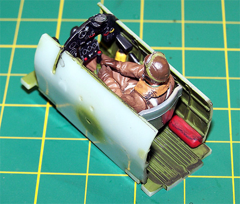 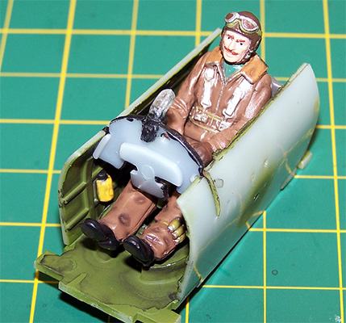
Well that came out pretty nice. Next the landing gear get painted and I used RLM-02 for my interior colors in all the landing gear bays. I used a small hammer to drive the axel pin into the wheel then mounted the shafts on the gear doors. Once the gear had dried I placed them and the secondary doors into the wing and screwed the wing together. Next I went around the perimeter of the wing with Tenax 7R to seal the seam. I checked out the little poly caps the kit provides to fill these screw holes but didn�t really like the results. I removed the caps then filled the holes with Squadron White Putty. This large a fill will experience some shrinkage so I let them cure for a couple days. When I cam back I sanded off the high spots then applied a healthy coat of Mr. Surfacer 500.
While the wing finishes drying I painted the propeller black and the spinner hub flat white. When this was dry I assembled the spinner/propeller and then was able to put the fuselage together. In the shot below you can see the first layer of Squadron White Putty filling the fuselage holes. I still have some glue work to do on the fuselage seam then the sanding starts.
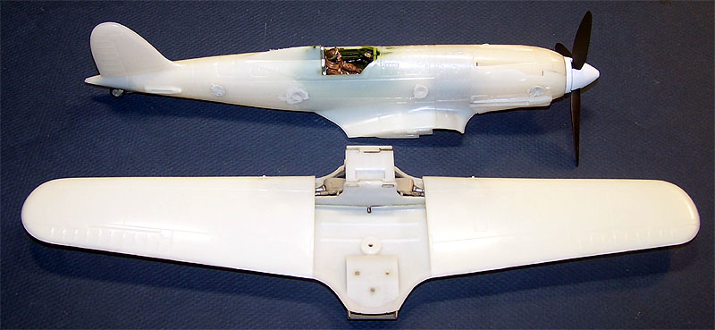
3/3/07
I�m slowing down a bit on this to allow for the large putty fills to dry completely and all shrinkage to stop. While waiting I attached the wing to the fuselage, here I found some slight interference between the upper wing fairing that is part of the fuselage and the landing gear in the retracted position. A little filing inside fixed the problem. This white plastic does not do much for taking pictures. In the images below you can see the layers of filler in the fuselage screw holes, the white Squadron putty with some darker gray Mr. Surfacer 500 over top. In the last image I have just started to fill the center screw hole and have only the first layer of Mr. Surfacer 500 into the seam just forward of the landing gear. The other screw holes in the wing have all been finished off already. Another coat of Mr. Surfacer, some more sanding and this should be about ready for masking and primer.
4/15/07
I had a short spell of illness that kept me away from the modeling table for a while but was at last able to drag my aging carcass back to the table and get to work on this build. The propeller and hub were masked off, the canopy was masked and installed then the back area of the canopy that is open was stuffed with damp tissue paper. The tail wheel was cover with tissue paper and all the lower radiators were done as well. Mr. Surfacer 1000 was thinned about 50% with lacquer thinner and the model was primed. Next the white areas around the nose and midsections were done, allowed to dry and masked off. The walk area on the wing root was done with Alclad white aluminum and masked. The basic color scheme began with some Testors Olive thinned with lacquer thinner. Next I painted splotches using German Sand. I used my Sotar 20/20 airbrush for this step and it made all the difference in the world. Once the German Sand was laid down then I mixed some Tamiya Hull Red and Dark Earth to make my final color. Here I ran into some slight trouble.
The cat is snoozing off to the side in his little bed, the wife is downstairs watching TV - all is calm. The bottle is full of paint and thinner -- I'm carefully stirring the paint when the bottle goes ZING out of my hands, spins across the desk spreading paint everywhere, flys off the desk and lands in my lap, bounces from the left leg to the right leg (still spinning) and drops to the chair seat between my nicely painted legs. There still plenty of energy left in this bottle as it makes a little bounce and heads for the floor (now completely inverted). The floor is hardwood so when the bottle hits it gets a pretty good bounce and heads across the floor. It's really amazing how much paint fits into one of these Tamiya paint jars. This entire process took all of three seconds (but went in slow motion to me like something from that show �Six Million Dollar Man�, I think I even heard that goofy music playing) and the paint bottle has gone out of sight somewhere under the desk. I'm going SHIT!, My wife is downstairs asking me if I'm all right, paint is running down my thighs and dripping off the edge of the desk and the cat is gone (he's smart). Ya know what? There is not a single stray drop of paint on the model, not one. It seems to be the only thing that spinning bottle missed. Tomorrow morning I'll hit the local hobby shop and pick up another bottle of paint. The chair is slightly stained, everything came off the floor and desk, my legs have an odd tanned look in places and I still have not seen the cat.
After a run to the local hobby shop I was ready to continue the build. The final color was laid down, allowed to dry for a few hours then the main masks (other than the canopy) were removed and the model was sealed with Future. The kit decals were applied and treated with Micro-Sol. They behaved very nicely and snuggled right down. Once they had dried they were sealed again with Future and a sludge wash made from ground pastel chalk was applied to the panel lines. I wanted to keep this real clean so was careful to not have a lot of overwipe going into the various panels. The model was final sealed with Micro-Flat (I ran out of Polly Scale clean flat � can you believe that?). Final details were some ground chalks added for exhaust staining and gun blast staining. The antenna was made from invisible thread drawn across a black magic marker and attached with spots of superglue.
The last masks are removed and the kit is done. For $9.96 this was a great buy. I had a lot of fun and the final product looks great. This was built completely from the box with no extras or scratch built stuff. The biggest issue this kit has is the use of screws to hold the fuselage and wings together. That does require some heavy filling and sanding and you must take enough time with this process to allow the putty to dry completely else things will shrink.
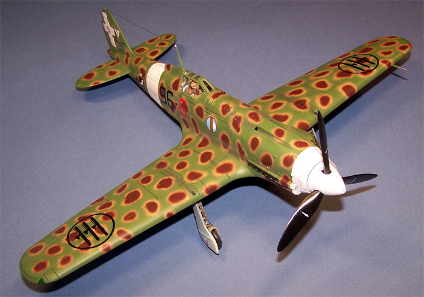
You may click on the small images below to view larger pictures.
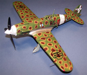
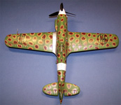
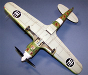
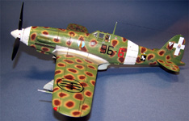